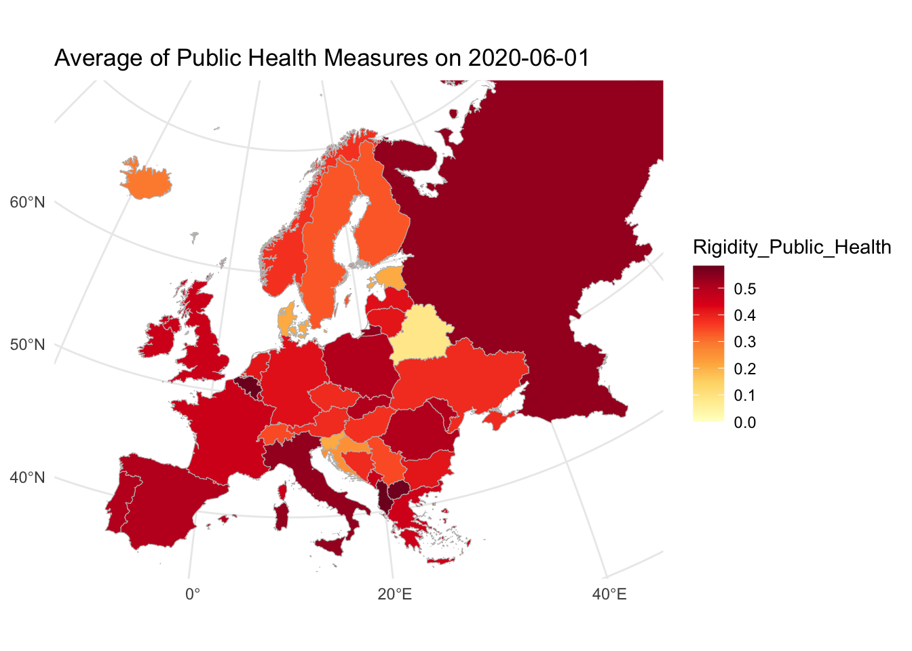
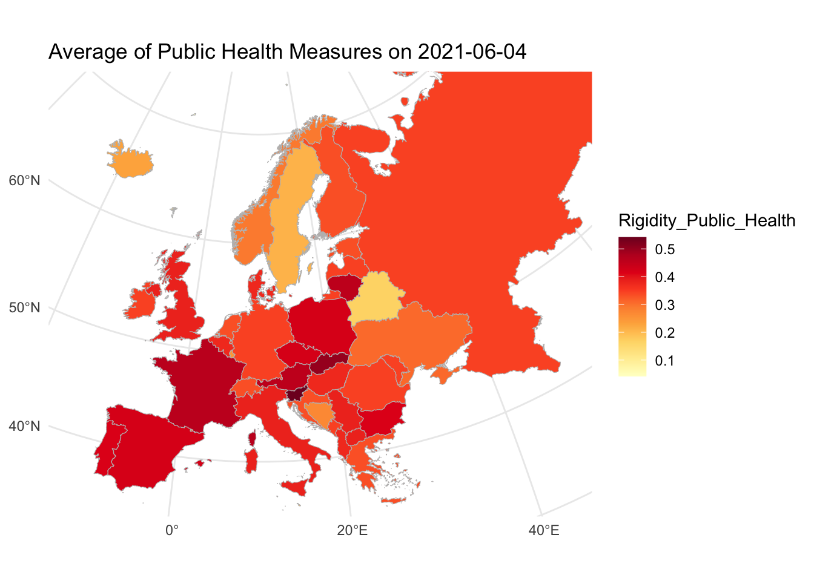

Policies

Introduction to Public Health Measures During COVID-19.
The COVID-19 pandemic marked an unprecedented global health crisis, compelling governments worldwide to implement a variety of public health measures aimed at mitigating the spread of the virus. These measures, ranging from lockdowns and mask mandates to school closures and travel restrictions, varied in intensity and scope across countries. In the European Union, these interventions were particularly critical, given the interconnectedness of its member states and the shared responsibility for ensuring public health and economic stability.
Public health measures are vital for containing the spread of infectious diseases, safeguarding healthcare systems, and protecting vulnerable populations. Understanding these policies and their impact is essential for evaluating how societies respond to crises, ensuring preparedness for future pandemics, and fostering resilience across nations. This analysis focuses on how EU countries, along with key neighboring states, responded to COVID-19 at the height of the pandemic and in the year that followed.
The European Union played a central role in coordinating public health responses, disseminating information, and providing financial and logistical support to member states. These measures affected millions of lives, influencing public health, social stability, and economic resilience across the continent.
Analysis of Public Health Measures
The first map highlights the level of public health measures implemented by European countries during the peak of the COVID-19 pandemic on June 1, 2020. The data reflects widespread public health measures across the region, as governments prioritized controlling the virus’s spread and protecting their healthcare systems.
Countries such as Albania, Belgium, and North Macedonia stand out for their rigorous public health measures during this time, signaling a strong commitment to curbing the pandemic. Similarly, Italy, Poland, and Russia implemented substantial measures, reflecting their efforts to mitigate the severe impact of COVID-19. Conversely, Belarus notably maintained the least restrictive measures, standing out as an outlier in the region. Countries such as Croatia and Slovenia also adopted relatively lighter measures compared to their neighbors.
This period highlights the critical role of public health policies in managing crises, with nations striking a balance between public safety and socioeconomic consequences. The varying levels of interventions highlight the complexity of decision-making in public health policy, influenced by factors such as healthcare capacity, public compliance, and economic considerations.

Second Analysis of Public Health Measures
The second map shows a substantial decrease in public health measures across Europe by June 4, 2021, as vaccination campaigns increased. However, there were still differences between regions, with Western European countries such as Spain, France, Portugal, and Italy maintaining higher levels of public health measures compared to their Eastern counterparts.
Countries like Poland, Lithuania, the UK, and Bulgaria also maintained significant public health measures during this period of time, highlighting their cautious approach to reopening. In contrast, nations such as Russia, Ukraine, Romania, Greece, and Moldova considerably reduced their public health measures, reflecting a shift in policy priorities. Belarus continued its pattern of maintaining minimal public health measures, highlighting its distinct approach to the pandemic.
These patterns suggest that Western European countries were generally more cautious, potentially due to higher population densities, stronger emphasis on healthcare systems, and the economic implications of prolonged restrictions. Meanwhile, Eastern European nations may have prioritized economic recovery and societal reopening as vaccination coverage increased.
Why This Matters
Public health measures during the COVID-19 pandemic highlight the balance between protecting citizens lives and mitigating effects on a country’s economy. The European Union’s role in supporting member states through funding, vaccine distribution, and cross-border coordination was essential in shaping these outcomes.
These measures affected everyone—from individuals and families facing restrictions to businesses adapting to closures and governments balancing public health with economic sustainability. Reflecting on these responses helps inform better strategies for managing future crises, ensuring that public health policies are equitable, effective, and aligned with shared European values.